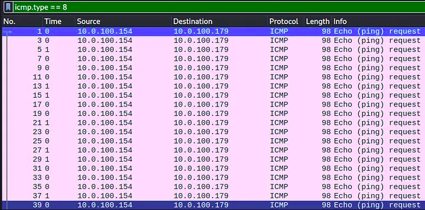
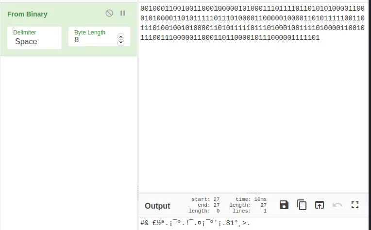
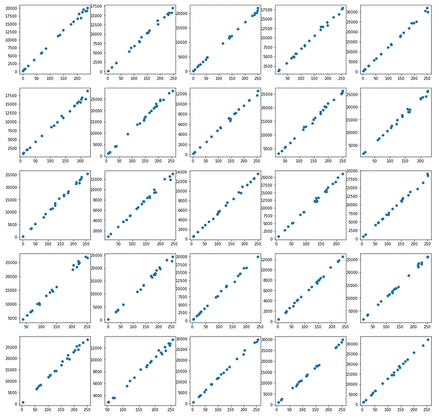
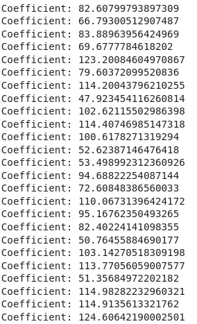
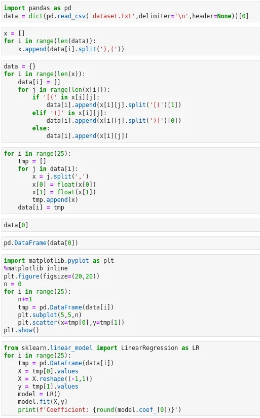

Data Exfiltration Challenge — CTF Internacional MetaRed 2021 - 3rd STAGE
Last night mr. heker broke into our systems and stole our flag. All our communications are secure and we can’t tell how the data leave our network.
I will send you an abnormal trace of communication. Please analize it and let me know if you figure it out. We need to get back that flag.
By the way. You know how mr. heker loves to play with people’s mind. He delivered a video with a creepy toy repeating the words “tic toc, tic toc”. I am not sure if it is a clue or just a silly game of him.
Creator : Nandx
Points to note :
- The PCAP File contains 418 ICMP Packets.
- ICMP : Internet Control Message Protocol
- The Hint the attacker left behind is a creepy toy that kept repeating **tic toc,tic toc **
The tic-toc part diverts the focus to the time of request.
Why Request? : Data is being exfiltrated here using the ICMP Protocol, so the replies can be disregarded.
- The attacker can control the time difference between the one packet and another. Therefore,
View → Time display format → Seconds since previous captured packet and also change the format to only seconds.
- To see only the requests, apply the display filter
icmp.type == 8

- Export the packet dissections.
File → Export Packet Dissections → As CSV
- I have used pandas to extract only the time field data, you may use a tool of your choice or just continue with the pandas method. On running the python file you should get a string of bits.


Why disregard the leading 0, (Notice that I have popped the first element from the pktimes list, in the python program. If I did not, I would have had a 0 there)
When I took the output without removing the leading 0, I got,

Convert it to ASCII to find the flag.

There was one extra 1 in the end. So, I decided to remove the first 0, since that is the time related to the first packet in the capture and the attacker would not have been able to manipulate it (It will remain 0.00000).
Happy Hunting…
SSTF 2021 — meLorean Challenge
There was a crazy Data Scientist who rectilinearly claimed mathematics can make miracles. He left a note and then disappeared. Help to decode it.
There seems to have been problem that was related to something linear in the SCTF 2021 meLorean Challenge.
As a person who works with data on a day to day basis, I related to the dataset in terms of Linear Regression almost immediately.
I thought of each letter as a dataset and when I plotted the coordinates on each list as their own graph, I got lines.

So, I thought, why not fit all such lines into a linear regression model and find out their coefficients.
I got this idea by randomly examining 2 coordinates of numbers in the first list.
(67,5801) and (0,240)
f(0) = 240 (Inference (If f is a linear equation) is that Bias = 240)
f(67) = 5801
5801 – 240 = 5561, which is also 67 * 83, so I stumbled upon the value of the coefficient of this line, but the other coordinates in the same list did not match.
There was some level of deviation from the line, which is also clearly visible on figure 1.
So, rounding off is necessary.
I created a data frame in pandas for each list of coordinates.
Press enter or click to view image in full size

I fit these data frames on a model of their own and got the model’s coefficients.

All I had to do was round them off now and convert to ASCII.

Replacing the ASCII Characters we get the flag.
Here’s my code:

Crowdstrike Falcon Content Update for Windows Hosts
when the world shut down for maintenance!!
Introduction
The disruption began on a Friday morning in Australia, and soon, woke up IT teams all across the world. The outage has affected several companies including, payment systems, healthcare systems, airline and railway industries. It is reported that 911 emergency services are down in the US for several states, and NHS in the UK, are also facing outages.
George Kurtz, the CEO of Crowdstrike, has posted on X,
"We understand the gravity of the situation and are deeply sorry for the inconvenience and disruption. We are working with all impacted customers to ensure that systems are back up and they can deliver the services their customers are counting on"
"CrowdStrike is actively working with customers impacted by a defect found in a single content update for Windows hosts. Mac and Linux hosts are not impacted. This is not a security incident or cyberattack. The issue has been identified, isolated and a fix has been deployed. We refer customers to the support portal for the latest updates and will continue to provide complete and continuous updates on our website. We further recommend organizations ensure they’re communicating with CrowdStrike representatives through official channels. Our team is fully mobilized to ensure the security and stability of CrowdStrike customers."
On the 19th on July, 0409 UTC, Crowdstrike released a content update, for the Falcon agent. They quickly reverted the changes, and as a result hosts that booted up after 0527 UTC shouldn’t experience any issues. Only windows hosts that were equipped with the crowdstrike falcon agent were affected and Mac and Linux users are safe. According to Crowdstrike, Windows 7/2008R2 were not affected by this issue.
The bug caused the windows host, to go into BSOD, the famous Blue Screen of Death, and get stuck in a restart state. The following consumer complaint will help you understand the weight of the situation.
jmcgough - ycombinator
Took down our entire emergency department as we were treating a heart attack. 911 down for our state too. Nowhere for people to be diverted to because the other nearby
hospitals are down. Hard to imagine how many millions if not billions of dollars this one bad update caused.
Cause of the outage
The Crowdstrike Falcon sensor, is an endpoint security component, which is designed to protect devices from malicious actors. While the WindowsBootLoader, loads the OS Kernel into memory, it also loads critical components like the Falcon Sensor, which is a LKM (Loadable Kernel Module). If this module errors out, it causes a failure in the boot sequence, causing the system to crash. Systems that were not running Falcon Sensor, were not affected.
The Falcon Sensor, receives configuration updates, multiple times in a day as a part of the Crowdstrike’s defensive operations. One such configuration update, was what caused the issue. The config update triggered an error, causing a failure in the boot sequence, resulting in the BSOD screen. In this case turning it off and on again wouldn’t work!!
When a computer is live (turned on), Falcon sensor driver pulls updates from the CS cloud. If this happened between 04:09 UTC to 05:27 UTC on July 19th. Then, that host, would not be able to boot properly due to a bad config update for the falcon sensor.

The config files referred to as “Channel Files” reside in C:\Windows\System32\drivers\CrowdStrike\ and they are used by falcon, to protect the host when its offline (when its not able to contact the crowdstrike cloud). The botched config file or “channel” file in this case starts with C-00000291- and has a .sys extension. Which is why, the initial remedy was to delete this file. After all, if a config is not there, it wont be applied right.
So, if you are facing this problem, the last updated timestamp of this file. C:\Windows\System32\drivers\CrowdStrike\C-00000291-*.sys, is probably after 04:09 UTC. The version of the file before 04:09UTC is in a good state. If you are on Windows, you can use the following steps to recover:
-
Boot into Safe Mode
-
Open command prompt
-
Run the following commands one by one.
CD C:\Windows\System32\drivers\CrowdStrike
dir C-00000291*.sys
del C-00000291*.sys
- Restart your device
Systems running MacOS and Linux, do not use Channel File 291, and hence, were not affected by the bad update.
Channel File 291 - Deep Dive
Named pipes are a method for interprocess communication (IPC) used by Windows systems. They allow processes to communicate with each other, either on the same machine or over a network. Named pipes can be used for legitimate purposes, such as data sharing between applications, but they can also be exploited by malware for malicious activities.
CF-291, controls how Falcon evaluates a pipe execution on Windows. The update was published as response to a newly observed malicious C2 framework, that used malicious named pipes in their attack.
Conclusion
Experts estimate the damage from the global Microsoft outage at billions of dollars, with significant impacts on various sectors. Many Hospitals were also shutdown, hindering emergency services, which might have caused some damage to human lives. The airline industry was severely affected, resulting in thousands of flight cancellations and operational suspensions by major US carriers such as United Airlines, Delta Air Lines, and American Airlines. The London Stock Exchange halted trading, and a third of McDonald’s restaurants in Japan closed due to malfunctioning cash registers.
Crowdstrike stocks fell by nearly 10% in 2 days. Economists suggest that the company will not be able to survive the financial storms its going to face, from the lawsuits that follow.

All this could have been avoided, if only Crowdstrike tested their code in a staging environment, understanding the criticality of the software they are running. This whole episode has only re-established the need for proper testing of software, before ramming it on production. It also raises a few questions on why we let one seemingly not so popular organization take down the entire world.
Introduction to Concurrent Programming with GPUs
What is Concurrent Programming?
- Modern programming is built around maximizing utilization of multiple cores and processors of modern computers. We do that by running multiple processes and threads. Used when software requires high computation requirements - Signal Processing, AI, etc. OS schedules threads, but correctness (sync, atomicity, memory ordering) is on the developer.
- Thread: An independant collection of sequentially executed programming steps.
- Modern computers have 4-8 cores and 4-16 active threads.
- Scheduler is at the heart of any OS’s multithreading capability.
- Memory caches are hierarchical in nature, works on the principle that memory thats physically closer is more performant, used to reduce time waste accessing main memory / disk.
Concurrent Programming Pitfalls
-
Race Conditions: When threads execute in a sequence, which is different than intended, The expercted order of operations is not followed and issues arise. Point to note is that, the threads execute their instructions properly and to completion based on the state of the shared variable. Minimize the use of shared/global variables. You can also use atomic variables with mutual exclusion and memory visibility/order (memory model).
A race is when outcome depends on timing/interleaving. The bug is often a data race (unsynchronized conflicting accesses), but races can exist even without shared variables (e.g., check-then-act on external state). -
Resource Contention: Two or more threads attempt to access/modify the same memory and conflict. It can happen between any two computing systems (threads, processes or even different computers). Contention can just slow you down; race corrupts correctness.
Resource contention exists because multiple threads compete for the same lock, but no race condition occurs because the lock enforces mutual exclusion, ensuring only one thread enters the critical section at a time, creating a clear happens-before relationship. -
Dead Lock: One or more processes are blocked from making progress while waiting for a resource, while not relinquishing their hold on a shared resource. This behaviour causes multiple threads to become blocked on each other, eventually ending up in a halted stae.
The Coffman conditions, named after Edward G. Coffman, Jr., who first outlined them in 1971, describe four necessary conditions that must be present simultaneously for a deadlock to occur: - Mutual Exclusion - Hold and Wait - No Preemption - Circular Wait -
Live Lock: Like dead lock but the processes are actively running, can happen when a programming loop tests for access prior to making a final change. This can end up in a non-halting state, recursively executing same code or even a buffer or stack overflow.
Even though both result in no useful progress, programs in deadlock stop running or exeuting any steps, so its easier to detect. But programs under a live lock, often execute the same thing repeatedly giving us the assumption that they are doing something. Livelock often shows high CPU usage with zero throughput, which misleads monitoring.
-
Resource Over / Under Utilization: Too little work, CPUs are sitting idle (wastage). Too many threads, CPUs are spending too much time context switching. Processes are overly complex and CPU heavy. Memory required is too large and changes very frequently. This means cache misses and data is transported too and from RAM/Disk too often, causing unnecessary latency.
Concurrent Programming Problems and Algorithms (patterns to look for)
-
Dining Philosophers: Philosophers in a round table. Each has a fork on the left and right (shared variables). They need 2 forks to eat, they can only pick up on fork at a time / eat / put one fork down at a time. We need an algorithm that allows all philoshophers to eat, while avoiding deadlock & starvation. An algorithm can avoid deadlock yet still allow some philosophers to be perpetually delayed if access to forks is not fair.
-
Producer Consumer: Very common in message queue patterns. One or more producers add data to a buffer, that is then consumed by consumers.
-
Sleeping Barber: N customers can sit in the waiting room, and there is only 1 barber. When inactive a barber sleeps. If a barber is sleeping a customer should wake him up and waits. If there is no space in the waiting room, no new customers can be added to the waiting room.
-
Data and Code Synchronization: Synchronization locks to control access to data and code in many languages. Implementation of locks can be mangaged like a deli counter ticketing systems. Semaphores are means of showing state, that can be used manage use of sections of code or data. Through locks, semaphores, and algorithms partial solutions can be devised to handle many concurrent programming issues, though there will always be competing constraints of access and efficiency.
Concurrent Programing Patterns
-
Divide and Conquer: Take large datasets and divide it. Small solve problems and apply those soltions to solve larger problems. Implementation is easy and powerful on computing platforms that can maintaing complex state.
-
Map Reduce: Its a subset of the DnC pattern, each mapper takes a single input and returns one value, and a reducer takes multiple values and reduces it into one value. There needs to be more mappers than reducers.
To check if a number is in a set, each mapper checks if the value passed to it is equal to the number we are searching for, if it is equal return 1 else 0. A reducer takes all these return values and decides whether the number was in the set or not.
-
Repository: A Central Repository manages central state across multiple running processes. It maintains the state of the shared data and manage access to it. It also updates and manages this data through predefined communication mechanisms. The processes need to interact with the repository for accessing this data, and maintain their own state, and must synchronize computation on the repository amongst themselves. Repositories do not control the order in which processes do computation.
-
Pipelines/Workflows: Pipelines can manage multiple sysnchronous or asynchronous processing steps in a linear fashion. Each step can have its own logic. Workflows are pipelines with more complex interactions, and can be represented as a DAG (Directed Acyclic Graph). (But some systems allow cycles)
-
Recursion: Data is divided into head and tail, functions operate of the head data and call themselves with the tail data. Recursion requires management of state, and they must have a final state. It is not advisable, since its too complex and GPUs do not perform well on this pattern. CUDA supports recursion (with limits); it’s often avoided due to stack/overhead/divergence.
Integrated vs Dedicated GPUs
-
Integrated GPUs: They are built into the CPU and share system memory. They use less power and generate less heat, because of this, they can help with battery life and are common in consumer latops.
-
Dedicated GPUs: They are seperate from the CPU and do not share memory. They use more power and generate more heat. They are more commonly used in desktops. Nvidia has a seperate programming framework to take more specific control of GPU hardware (CUDA), this is not possible in AMD based dedicated GPUs. OpenCL is one of the most common opensource heterogenous computing platforms with support for most CPU and GPU hardware. OpenAcc is newer framework for making it easier to use numerous types of accelerators, including CPUs and GPUs. It aims to use decorators for accelerating code, and offers lesser control. CUDA is the leading framework for developing code that executes on Nvidia GPUs. It controls both high-level and low-level access and memory capabilities.
Nvidia GPU Architectures
- Tesla: Allowed CUDA programming
- Fermi: Introduced FP64 floating point values
- Kepler: Introduced Dynamic Parallelism => improved programmability
- Maxwell: Higher Perf/Watt (more cores, more memory bandwidth, and lower power consumption)
- Pascal: Unified Memory, Stacked DRAM, NVLINK (makes memory transfers faster)
- Turing: Introduced Ray Tracing and Tensor Cores
- Ampere: More Faster, More Memory (more tensor and raytracing cores)
CUDA Software Layers

- The CUDA application can communicate with either the runtime or the driver APIs. The decision is upto the developer and it is a deciding factor in showing what the underlying software will look like and how it will be compiled.

Higher level Access Pattern (Runtime API)
The CUDA Runtime API was developed by NVIDIA as a simpler option that the Driver API. It is an abstraction of the Driver API. In the Runtime API, all kernels that were compiled into any GPU code are available to host code. The code that utilizes this API is written in C++.
-
Runtime API hides context creation, Device selection, Module loading / kernel symbol management. You lose control over:
- When and how contexts are created.
- You can’t dynamically load/unload PTX modules with the same flexibility
- You’re constrained to the runtime’s lifecycle and abstraction decisions
-
Embed GPU code in host code and compile everything with nvcc.
-
nvcc compiles device code, embeds it into the host binary, and generates host-only code.
-
The host compiler produces an executable that interacts with the CUDA Runtime, which automatically loads and launches kernels.
nvcc -o vector_add vector_add.cu
./vector_add
Lower level Access (Driver API)
Developed by NVIDIA to offer more fine grained control of what is executed on hardware. Language independent , so any base that can invoke cubin objects will be able to use this API. The driver API needs to be initialized atleast once via the cuInit function.
- Compile the GPU and CPU code seperately and have the host executable interact with the GPU code interactively.
- The CUDA kernel (.cu) is compiled by itself into PTX or a fatbin. This produces GPU-only code, not an executable.
- The host program (drivertest.cpp) is compiled separately into an object file. It contains Driver API calls, not kernels.
- The object file is linked into an executable that links against libcuda. This creates a normal CPU program.
At runtime, the executable:
- Initializes the CUDA driver
- Loads the PTX/fatbin file - The file (PTX/fatbin) is loaded as a module.The kernel function is retrieved from the module.
- Extracts the kernel symbol
- Launches the kernel manually
nvcc -o matSumKernel.fatbin -fatbin matSumKernel.cu -lcuda (or) nvcc -o matSumKernel.ptx -ptx matSumKernel.cu -lcuda
nvcc -o drivertest.o -c drivertest.cpp -lcuda
nvcc -o drivertest drivertest.o -lcuda
./drivertest
Writing CUDA Applications
A CUDA application will be part host based and part GPU targetted code, the code will co-exist in the same file or be seperate. Code files with CUDA will have the .cu or .cuh extensions. Neural network/Mathematical constructs using CUDA are pytorch and tensorflow.
A common way to use CUDA is to use NVIDIA CUDA developer toolkit libraries. Some remove the need for complex CUDA code, and make complex data structures or programming constructs simpler. Examples: cuBLAS, cuFFT, NPP, Thrust, etc.
CUDA Keywords
Execution Context / Function Qualifiers
-
__device__- Called from GPU context and executed on GPUIt is called from a kernel or another device function It runs inside a single thread It is just normal logic, not a launch -
__global__- Called from CPU context and executed on GPUIt is an entry point from the host It is launched with <<<grid, block>>> It represents parallel work across many threads It does not return a value -
__host__(default) - Called from CPU context and executed on CPU. Responsible for: Memory allocation, Data movement, Kernel launches, Synchronization, Control flowOnly the host (CPU) calls the CUDA Runtime API. That includes: * cudaMalloc * cudaFree * cudaMemcpy * cudaMemcpyAsync * cudaMemset * cudaDeviceSynchronize * kernel launches (<<< >>>)
Threads, Blocks and Grids
kernel <<<blocksPerGrid, threadsPerBlock, sizeOfSharedMemory(optional), cudaStream(optional)>>> (kernelArgs)
- Threads - Each invocation of a kernel executes on a single thread
- Blocks - Collection of threads that share memory and should be a multiple of 32 (not required, but recommended for better occupancy/efficiency)
- Grids - Collection of blocks that share some memory. Blocks don’t share shared memory; cross-block comm is via global memory (or cooperative groups in special cases).
Memory Keywords
int, char, float, etc- Based on hardware and number of threads registers will be used.const/__constant__- const memory keyword, will attempt to allocate based on hardware.shared/__shared__- Memory that is shared within a block.
CUDA Project Structure and Best Practices
Project Structure
-
Flat code with single entry point (main function) and using make/cmake should have the following structure
# simple project project/ main.cpp - for code main.h - for headers Makefile (or) CMakeLists.txt - for building the project README (or) README.md - documentation etc. # complex project project/ # for complex cmake config files cmake/ # documentation docs/ # your code src/ # headers thats used by other files common/ utils.h main.cpp others.cpp # for public header files include/ common/ utils.h main.h other.h # Test code tests/ Makefile (or) CMakeLists.txt README (or) README.md
Best Practices
- Strong Scaling: The algorithms are easily parallelizable, and can be measured by Amdahl’s Law.
- Weak Scaling: When increasing the number of processes doesn’t have a linear effect on performance
Calculate what code / what parts of the code are run on GPUs, the more you parallelize the better.
- Consider memory optimization (though may not have a huge impact on performance)
- Branching like,
ifordo whilecan be costly. (Why? Refer: Warp Divergence) - Profile your code using
Nsight Systems/Compute. - Test your code
- Make performance metrics, part of your code’s execution, to compare against sequential or less parallel implementations.
SAMPLE CUDA CODE
/*
* Copyright 1993-2015 NVIDIA Corporation. All rights reserved.
*
* Please refer to the NVIDIA end user license agreement (EULA) associated
* with this source code for terms and conditions that govern your use of
* this software. Any use, reproduction, disclosure, or distribution of
* this software and related documentation outside the terms of the EULA
* is strictly prohibited.
*
*/
/*
* Vector multiplication: C = A * B.
*
* This sample is a very basic sample that implements element by element
* vector multiplication. It is based on the sample illustrating Chapter 2
* of the programming guide with some additions like error checking.
*/
#include "simple.h"
/*
* CUDA Kernel Device code
*
* Computes the vector product of A and B into C. The 3 vectors have the same
* number of elements numElements.
*/
__global__ void vectorMult(const float *A, const float *B, float *C, int numElements)
{
int i = blockDim.x * blockIdx.x + threadIdx.x;
if (i < numElements)
{
C[i] = deviceMultiply(A[i], B[i]);
}
}
__device__ float deviceMultiply(float a, float b)
{
return a * b;
}
__host__ std::tuple<float *, float *, float *> allocateHostMemory(int numElements)
{
size_t size = numElements * sizeof(float);
// Allocate the host input vector A
float *h_A = (float *)malloc(size);
// Allocate the host input vector B
float *h_B = (float *)malloc(size);
// Allocate the host output vector C
float *h_C = (float *)malloc(size);
// Verify that allocations succeeded
if (h_A == NULL || h_B == NULL || h_C == NULL)
{
fprintf(stderr, "Failed to allocate host vectors!\n");
exit(EXIT_FAILURE);
}
// Initialize the host input vectors
for (int i = 0; i < numElements; ++i)
{
h_A[i] = rand()/(float)RAND_MAX;
h_B[i] = rand()/(float)RAND_MAX;
}
return {h_A, h_B, h_C};
}
__host__ std::tuple<float *, float *, float *> allocateDeviceMemory(int numElements)
{
// Allocate the device input vector A
float *d_A = NULL;
size_t size = numElements * sizeof(float);
cudaError_t err = cudaMalloc(&d_A, size);
if (err != cudaSuccess)
{
fprintf(stderr, "Failed to allocate device vector A (error code %s)!\n", cudaGetErrorString(err));
exit(EXIT_FAILURE);
}
// Allocate the device input vector B
float *d_B = NULL;
err = cudaMalloc(&d_B, size);
if (err != cudaSuccess)
{
fprintf(stderr, "Failed to allocate device vector B (error code %s)!\n", cudaGetErrorString(err));
exit(EXIT_FAILURE);
}
// Allocate the device output vector C
float *d_C = NULL;
err = cudaMalloc(&d_C, size);
if (err != cudaSuccess)
{
fprintf(stderr, "Failed to allocate device vector C (error code %s)!\n", cudaGetErrorString(err));
exit(EXIT_FAILURE);
}
return {d_A, d_B, d_C};
}
__host__ void copyFromHostToDevice(float *h_A, float *h_B, float *d_A, float *d_B, int numElements)
{
size_t size = numElements * sizeof(float);
// Copy the host input vectors A and B in host memory to the device input vectors in device memory
printf("Copy input data from the host memory to the CUDA device\n");
cudaError_t err = cudaMemcpy(d_A, h_A, size, cudaMemcpyHostToDevice);
if (err != cudaSuccess)
{
fprintf(stderr, "Failed to copy vector A from host to device (error code %s)!\n", cudaGetErrorString(err));
exit(EXIT_FAILURE);
}
err = cudaMemcpy(d_B, h_B, size, cudaMemcpyHostToDevice);
if (err != cudaSuccess)
{
fprintf(stderr, "Failed to copy vector B from host to device (error code %s)!\n", cudaGetErrorString(err));
exit(EXIT_FAILURE);
}
}
__host__ void executeKernel(float *d_A, float *d_B, float *d_C, int numElements)
{
// Launch the Vector Add CUDA Kernel
int threadsPerBlock = 256;
int blocksPerGrid =(numElements + threadsPerBlock - 1) / threadsPerBlock;
printf("CUDA kernel launch with %d blocks of %d threads\n", blocksPerGrid, threadsPerBlock);
// REPLACE x, y, z with a, b, and c variables for memory on the GPU
vectorMult<<<blocksPerGrid, threadsPerBlock>>>(d_A, d_B, d_C, numElements);
cudaError_t err = cudaGetLastError();
if (err != cudaSuccess)
{
fprintf(stderr, "Failed to launch vectorAdd kernel (error code %s)!\n", cudaGetErrorString(err));
exit(EXIT_FAILURE);
}
}
__host__ void copyFromDeviceToHost(float *d_C, float *h_C, int numElements)
{
size_t size = numElements * sizeof(float);
// Copy the device result vector in device memory to the host result vector
// in host memory.
printf("Copy output data from the CUDA device to the host memory\n");
cudaError_t err = cudaMemcpy(h_C, d_C, size, cudaMemcpyDeviceToHost);
if (err != cudaSuccess)
{
fprintf(stderr, "Failed to copy vector C from device to host (error code %s)!\n", cudaGetErrorString(err));
exit(EXIT_FAILURE);
}
}
// Free device global memory
__host__ void deallocateMemory(float *h_A, float *h_B, float *h_C, float *d_A, float *d_B, float *d_C)
{
// Error code to check return values for CUDA calls
cudaError_t err = cudaFree(d_A);
if (err != cudaSuccess)
{
fprintf(stderr, "Failed to free device vector A (error code %s)!\n", cudaGetErrorString(err));
exit(EXIT_FAILURE);
}
err = cudaFree(d_B);
if (err != cudaSuccess)
{
fprintf(stderr, "Failed to free device vector B (error code %s)!\n", cudaGetErrorString(err));
exit(EXIT_FAILURE);
}
err = cudaFree(d_C);
if (err != cudaSuccess)
{
fprintf(stderr, "Failed to free device vector C (error code %s)!\n", cudaGetErrorString(err));
exit(EXIT_FAILURE);
}
// Free host memory
free(h_A);
free(h_B);
free(h_C);
}
// Reset the device and exit
__host__ void cleanUpDevice()
{
// cudaDeviceReset causes the driver to clean up all state. While
// not mandatory in normal operation, it is good practice. It is also
// needed to ensure correct operation when the application is being
// profiled. Calling cudaDeviceReset causes all profile data to be
// flushed before the application exits
cudaError_t err = cudaDeviceReset();
if (err != cudaSuccess)
{
fprintf(stderr, "Failed to deinitialize the device! error=%s\n", cudaGetErrorString(err));
exit(EXIT_FAILURE);
}
}
__host__ void performTest(float *h_A, float *h_B, float *h_C, int numElements)
{
// Verify that the result vector is correct
for (int i = 0; i < numElements; ++i)
{
if (fabs((h_A[i] * h_B[i]) - h_C[i]) > 1e-5)
{
fprintf(stderr, "Result verification failed at element %d!\n", i);
exit(EXIT_FAILURE);
}
}
printf("Test PASSED\n");
}
/*
* Host main routine
*/
int main(void)
{
int numElements = 50000;
printf("[Vector multiplication of %d elements]\n", numElements);
auto[h_A, h_B, h_C] = allocateHostMemory(numElements);
auto[d_A, d_B, d_C] = allocateDeviceMemory(numElements);
copyFromHostToDevice(h_A, h_B, d_A, d_B, numElements);
executeKernel(d_A, d_B, d_C, numElements);
copyFromDeviceToHost(d_C, h_C, numElements);
performTest(h_A, h_B, h_C, numElements);
deallocateMemory(h_A, h_B, h_C, d_A, d_B, d_C);
cleanUpDevice();
printf("Done\n");
return 0;
}